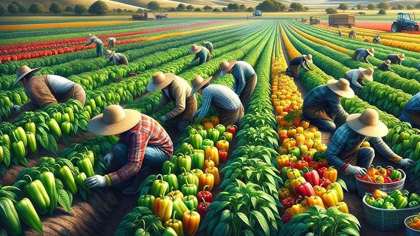
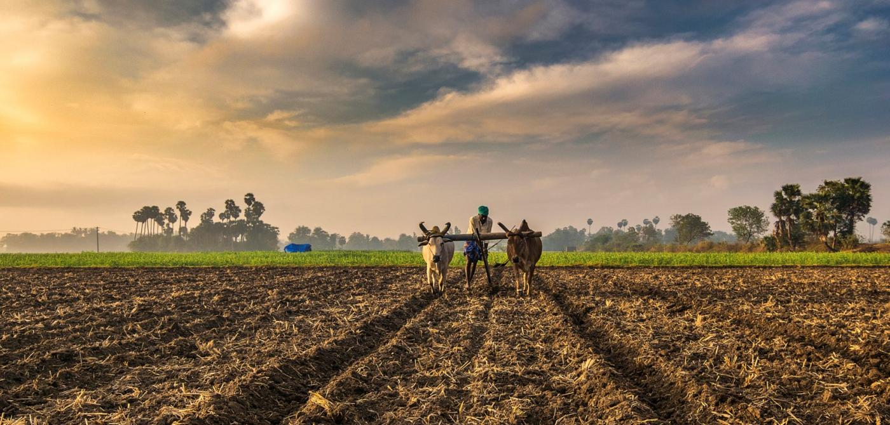

AgriMate- where farming meets innovation! We’re here to support you on every step of your agricultural journey, providing expert advice, tailored crop solutions, and up-to-date market insights.
About Us

Agri-Mate is your trusted partner in modern farming! Our mission is to empower farmers with essential knowledge, resources, and real-time guidance for better crop management and higher yields. From personalized crop advice to market prices and weather updates, Agri-Mate brings you everything you need to make informed decisions right at your fingertips. Join us in creating a smarter, more sustainable future for agriculture!
With easy access to expert support, Agri-Mate also connects you to a vibrant community of fellow farmers and professionals. Here, you can exchange insights, share experiences, and find solutions tailored to your unique farming needs.

Our user-friendly platform is designed to simplify your daily farming activities, save time, and reduce costs. With Agri-Mate, every farmer, from smallholders to large-scale producers, can thrive through technology-driven solutions that are easy to use, reliable, and tailored to real-world agricultural challenges. Let Agri-Mate be your ally in achieving long-term success and resilience.
Our Powerful Features
Agri-Mate provides tailored crop management advice based on local conditions, soil health, and crop type. This personalized guidance helps farmers apply the right techniques at the right time, enhancing growth, yield, and quality. It empowers farmers to make data-driven decisions that optimize resources and maximize profitability.
Agri-Mate offers up-to-the-minute market price information for various crops. This feature enables farmers to monitor price trends, choose the right time and place to sell their produce, and maximize earnings. By connecting farmers to market insights, Agri-Mate strengthens their bargaining power and financial outcomes.
With reliable weather forecasting, Agri-Mate helps farmers prepare for changing conditions, reducing the risks associated with unpredictable weather. Accurate forecasts support timely sowing, irrigation, and harvesting decisions, protecting crops from potential damage and increasing resilience. This feature is crucial for effective planning in today’s climate-sensitive agriculture.
 @agri_mate
@agri_mate